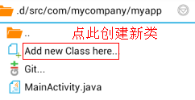
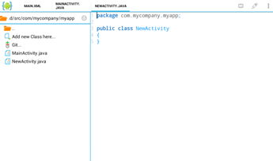
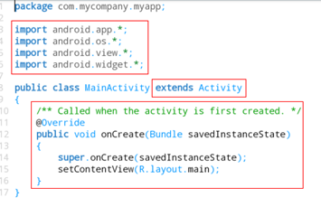
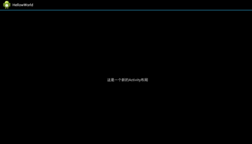

5.新建一个Activity
上节我们说到了Activity，它是android程序一个非常重要的组成部分之一，Android应用程序有4个非常重要的组件：Activity、Broudcast Intent Receive、Service、Content Provider。它们通常被叫做Android应用程序的四大组件，Activity是其中最重要的，其他的三个我现在解释恐怕大家很难接受。有兴趣的同学可以百度一下，android四大组件。
我们在上一节中说到，一个Android程序是由很多个Activity组成的，有个比较好的比喻，我们的一个Activity就好比电脑上的一个窗口，每个窗口上都有每个窗口不同的功能，很多个窗口合在一起就组成了我们电脑上看到的软件。手机上Activity也就是如此，只是它没有形象的中文名字。那既然一个安卓程序由很多个Activity组成，那肯定我们需要知道怎么去新建一个Activity（不过与其说是新建，不如说是配置一个Activity，等下你们就知道了）。
这里我们以第3节课的那个HellowWorld项目为例，新建一个Activity需要有这样四个步骤：
1、新建一个Activity类
什么是类？可能大家没学过java，不懂，这里我们先这样理解，src目录下的一个.java后缀结尾的java源文件就是一个java类。java类可以做很多事，我们把用来关联一个Activity的类叫做Activity类。开始行动吧，首先我们先进入HellowWorld/src/com/mycompany/myapp目录下，点击Create new Class here（在这里创建一个新类），出来一个框，要你输入类名，这里我们要用首字母大写的英文命名，我输入的是NewActivity，如下图：

点击ok确定，然后看代码，显示如下图：

上图的代码你也许看不懂，没关系，我可以告诉你，那就是一个普普通通的java类，并不是我们所要的Activity类，怎么办呢？让我们先来看看我们之前新建项目时系统默认帮我们新建了一个Activity类(MainActivity.java)的代码是怎么样的，看下图:

通过与我们自己新建的类对比，我们发现了3处不同，怎么办呢？用傻办法，把这三处不同复制到我们的NewActivity.java的代码里（复制粘贴不会的猛戳这里，好吧，本教程提供强大的java代码复制功能）。好了，我的复制好了，然后点击菜单键-->Save(保存)，我们的Activity类就OK了。
2、创建Activity布局
上节我们说到一个Activity是由res/layout文件夹下的一个.xml后缀布局文件和src/文件夹下一个.java后缀的源代码文件向关联组成的，那我们现在就来创建一个.xml后缀布局文件。把项目文件夹跳到res/layout文件夹下，我们可以看到这里已经有一个main.xml文件，那是因为我们项目新建时已经有一个Activity了，这个是MainActivity类的布局文件，现在我们需要为我们自己新建的NewActivity类也配置一个布局文件。在项目文件管理器里点击Add new Xml file here...在命名框中输入newone（文件名以小写英文字母命名），然后点击OK完成新建。AIDE已经自动打开了新建的newone.xml文件，你会发现，里面是空的，什么也没有，那我们写些什么呢？不会写不要紧，我们把main.xml文件里的东西复制过来。为了和main.xml的布局区分，我把android:text="@string/hellow"改成了android:text="这是一个新的Activity布局"，好了，我们的Activity布局文件就配置完了。
4、注册创建的Activity到AndroidManifext.xml
如果我们的程序有很多很多的Activity，那系统在把我们的代码编译成apk安装运行的时候，它是怎么知道我们写了多少个Activity的呢。这里就说到我们项目文件夹里最重要的AndroidManifext.xml文件了，这个文件就好比一个名单，我们新写的Activity都需要在这个“名单”上注册一下，系统运行程序的时候才会知道我们有多少个Activity。
到这里，我们的一个Activity就新建配置好了，那怎么在程序运行时看见我们刚写的那个Activity呢？由于我们没有学习事件，所以我们没办法从最开始的那个MainActivity跳到NewActivity。那我们就把NewActivity变成我们打开程序时的第一个Activity不就可以看见了？第一个启动的Activity是由AndroidManifext.xml里这段代码所决定的。
上面的红色代码是一个过滤器. 这段代码写在MainActivity的注册信息里，所以MainActivty第一个启动，那么是不是把这段代码剪切到NewActivity 的注册信息里，NewActivity 就第一个被启动了呢?剪切好了如下：
ok，Save保存一下，Run运行！看运行结果:

好了这节就到这里，希望大家多多练习。
练习1.★回顾本章内容。